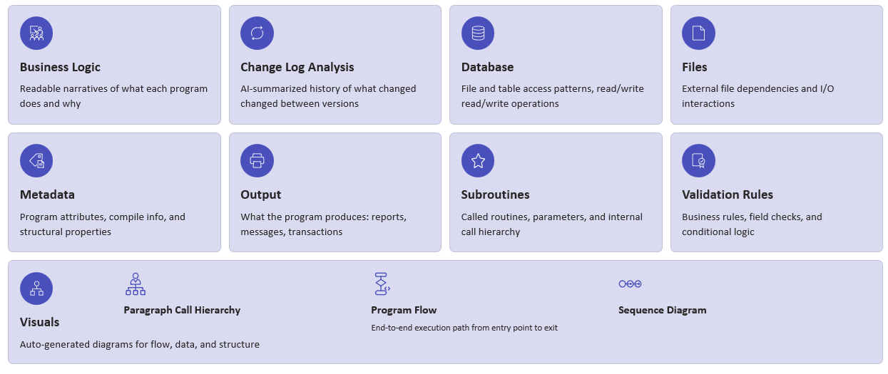
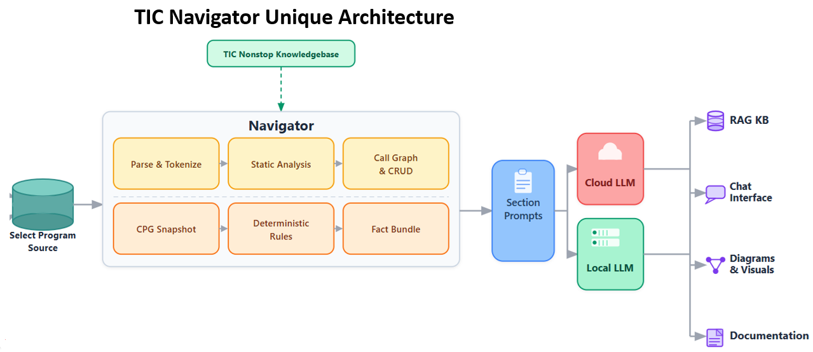

Webinar: A Better Way to Develop and Navigate HPE Nonstop using Ai from TIC Navigator
Navigator
Analyze. Understand. Modernize.
TIC Navigator is an AI-powered documentation and code analysis tool designed for HPE NonStop environments. It analyzes COBOL, TAL, C/C++, and TACL code to extract business rules and system behavior, presenting them in plain language and diagrams. It creates a searchable knowledge base that helps teams understand legacy code without rewriting it, supporting modernization efforts. Essentially, it centralizes and indexes application code to make it accessible for both technical and business teams, enabling high-level review and AI-based queries.
Topics We Discussed
TIC Navigator Boosts Remote Developer Productivity
Rapid Ramp-Up
Developers understand complex programs in hours, not weeks.
Clear Documentation
Access up-to-date program logic and architecture without guesswork.
Fewer Errors
Reduce costly mistakes and rework while increasing team efficiency.
TIC Navigator — Deep Intelligence by Default

Every Navigator analysis run covers these nine dimensions of your NonStop programs — each powered by AI and delivered as a structured, searchable tab in the Knowledgebase.

TIC Navigator analyzes and structures the code into prompts, which are then sent to cloud or local LLMs to generate outputs like a knowledge base, chat interface, visuals, and documentation.